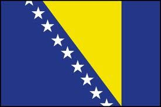

Bienvenue sur la tour de Babel bis!
La Bosnie
Alors sur ce sujet je m'y connais plutot bien. VIVE LA BOSNIE!! Je ne suis pas originaire de là-bas ou quoi juste c'est un très beau pays
très sympatique. YOUHOU LA BOSNIE ! Bon le nom complet c'est pas la bosnie hein c'est la Bosnie-Herzégovine.

Alors voilà le drapeau il est très beau et magnifique.
Alors tout ce que je sais c'est que là-bas ils parlent bosnien et dautres langues quasi pareil